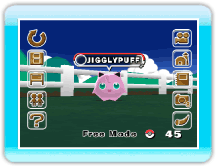

When you point at the screen, the main menu
will be displayed.
Select a menu and press
.
Wii Menu
After a chat with Hayley, the game will automatically be
saved, and you can exit the game.
Connect to DS
(→p.11)
You can deposit Pokémon to the Ranch and withdraw
Pokémon from the Ranch by connecting with Pokémon
Diamond or Pokémon Pearl.
BBS
(→p. 15)
Pokémon Wanted
You can check the Wanted Pokémon.
Ranch Info
You can check the current Ranch Level, the maximum number of
Pokémon you can deposit, and the number of Pokémon
you need for the next level.
Options
(→p. 16)
Bring Mii
You can bring in a Mii created in the Wii console's Mii Channel
and set a Mii as a Caretaker.
Look at My Ranch!
If this setting is "ON," you can exchange pictures or
Ranch-status info with your Wii Friends. You can invite your Wii
Friends to your Ranch via WiiConnect24. (→p.22)
Guest
If this setting is "ON," an unexpected Guest might show up at the
Ranch. (→p.22)
Help
You can review how to operate the game and read an
explanation of the main menu.
Change Mode
You can change the mode between "Auto Mode" and "Free
Mode." *
* Available only when your Ranch reaches a certain level.
Deposit Details
(→p.17)
You can check the current number of deposited
Pokémon and view the Pokémon Parade. You can select
the Pokémon on the Ranch using All, Trainer, or Favorites
under Deposit Details.
Take Picture
(→p.18)
You can take a picture of the current screen. The number
shown in the bottom right corner represents the number of
pictures remaining.
Album
(→p.19)
You can view pictures you have taken. You can also save
and delete pictures on an SD Card and post pictures to the Wii
Message Board.

 .
.